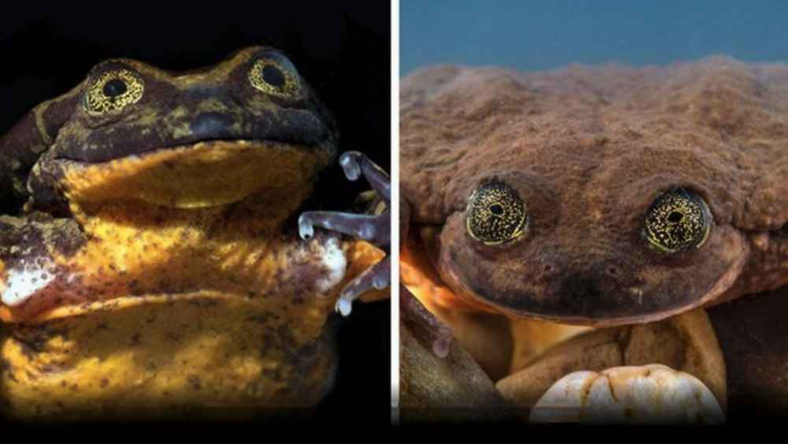

About Us
Zoo-la-la is a professional zoological matchmaking service. We learn each animal's deepest desires in order to find the mate of their dreams. We work with zoos - domestic and international - in order to find hundreds of exotic matches just for you. Whether endangered and looking for something serious or just looking for fun, we can help. Check out the profiles of several beastly singles. Copulation is just a click away!
Frog Story

Sehuencas Water Frog, Cochabamba, Bolivia
Zodiac Sign: Aquarius
After 10 years of searching, Romeo the frog has found the love of his life - Juliet. On the weekends, they enjoy farmers' markets and playing pickleball. They just moved to the subarbs and leased a Subaru Forester. Romeo is so glad he found Juliet with Zoo-la-la!
Disclaimer
Zoo La-La prides itself in our ability to screen all our members and to give all of our members a quality dating experience! However, in the event of a bad date that results in mauling, long-term stench or general injury, Zoo-La-La cannot be held responsible.